Out on Milford Sound we saw the Lady Bowen waterfall, some dozy fur seals, Sterling Waterfall (very wet) and some underwater creatures at the five storey (four of them underwater) Deep Underwater Observatory where you can watch deep-water corals, tube anemones and bottom-dwelling sea perch.
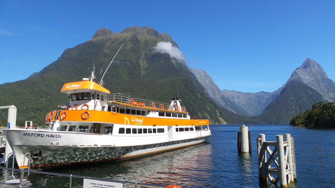
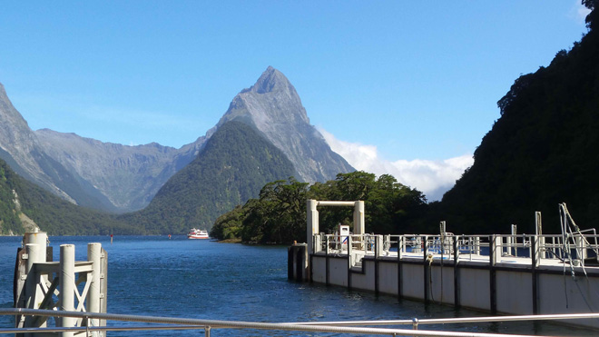
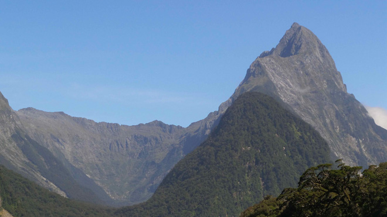
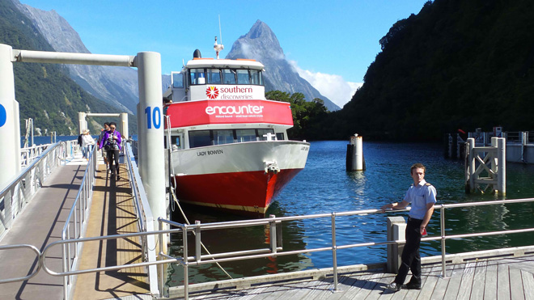
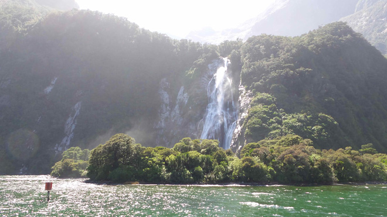
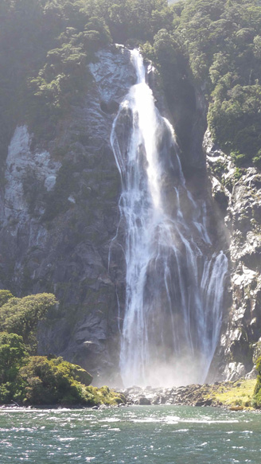
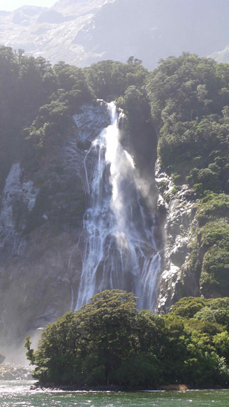
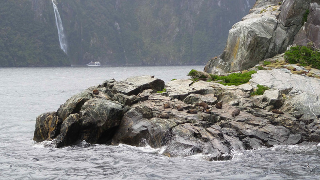
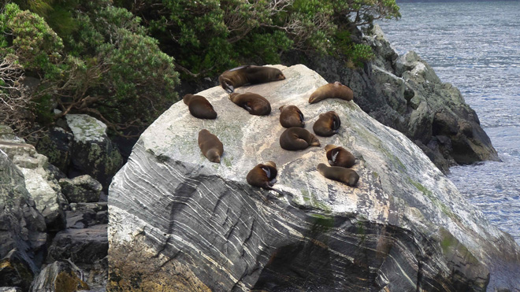
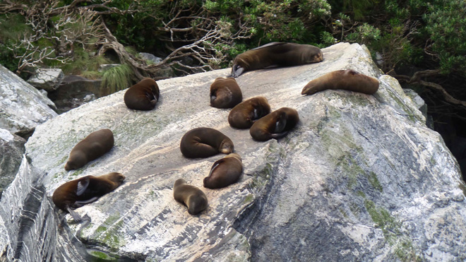
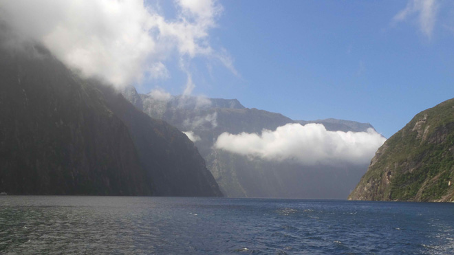
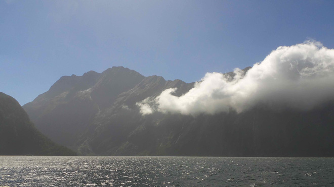
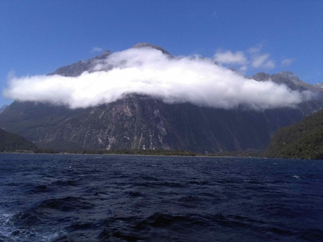
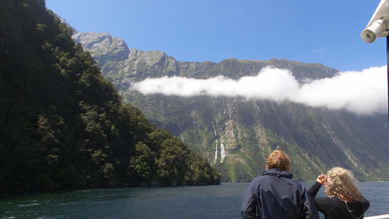
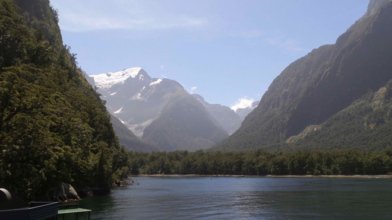
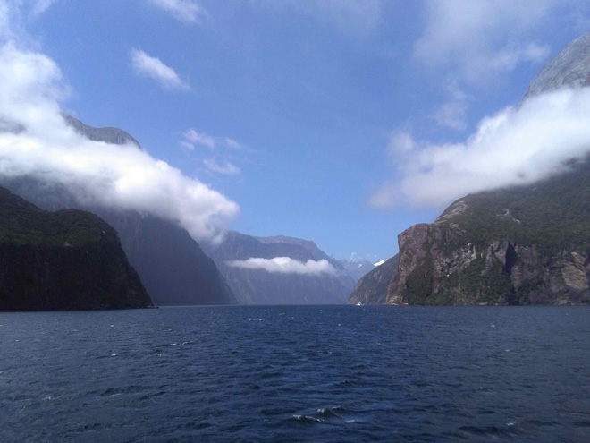
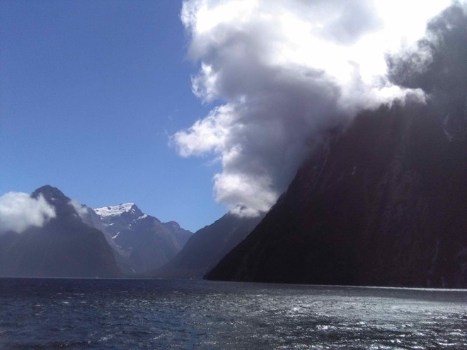
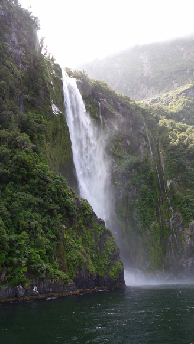
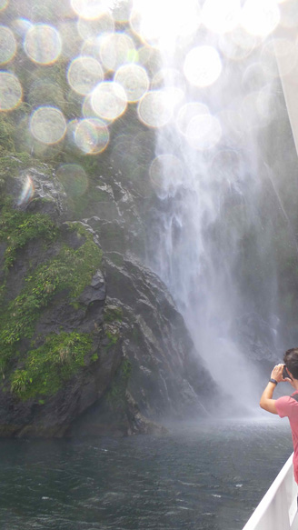
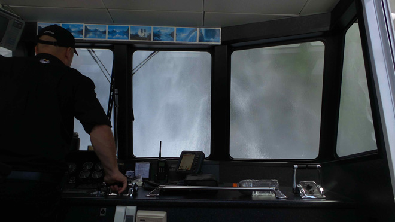
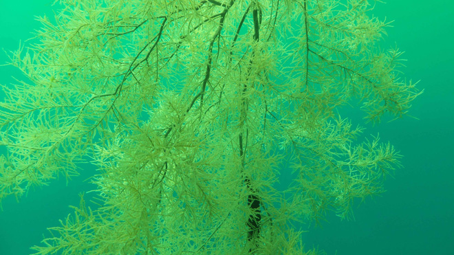
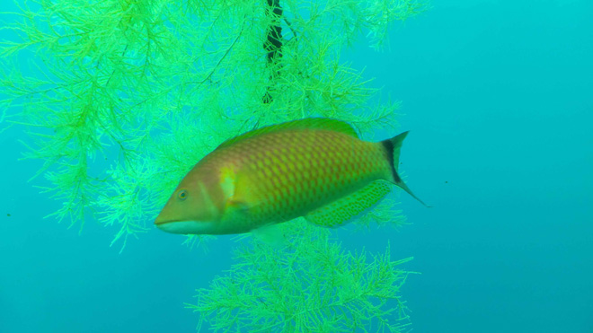
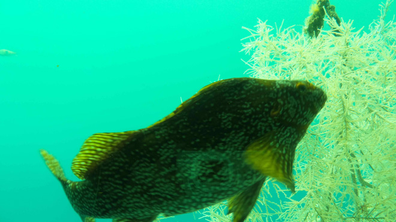
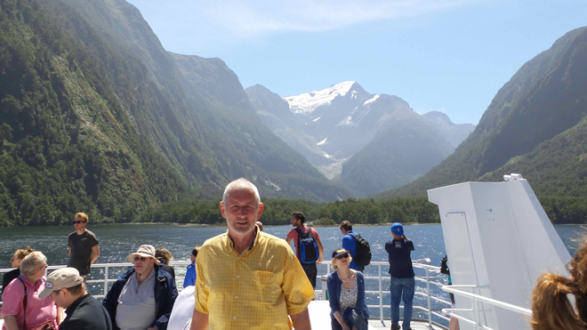
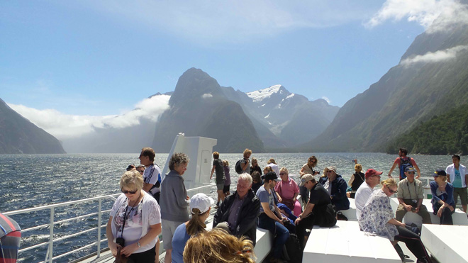
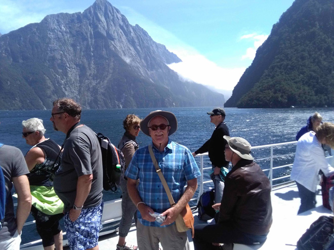
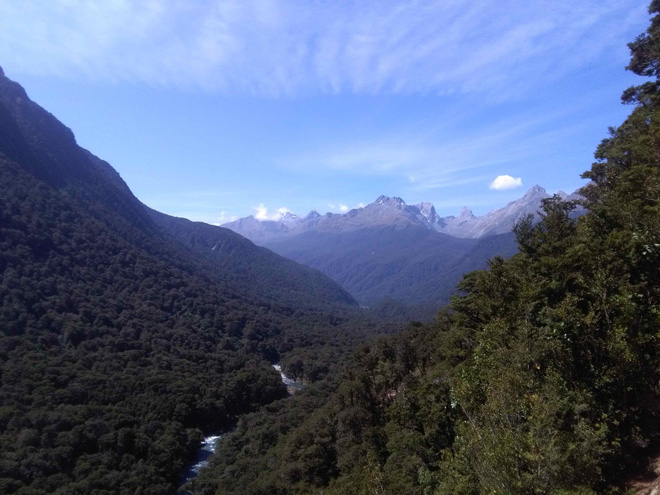
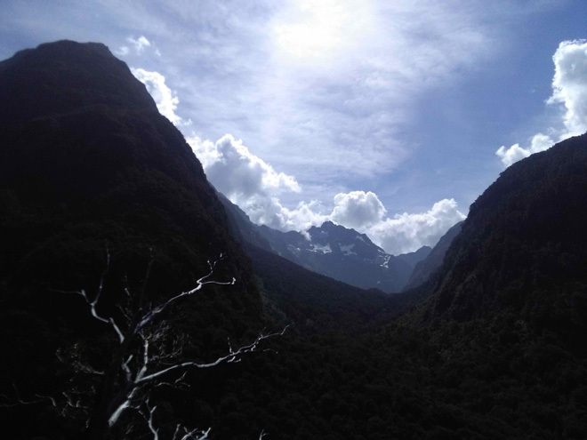